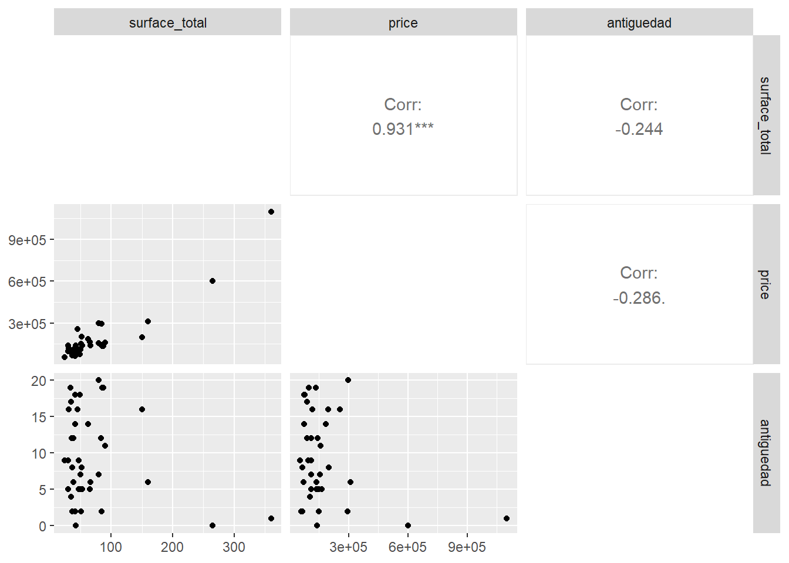
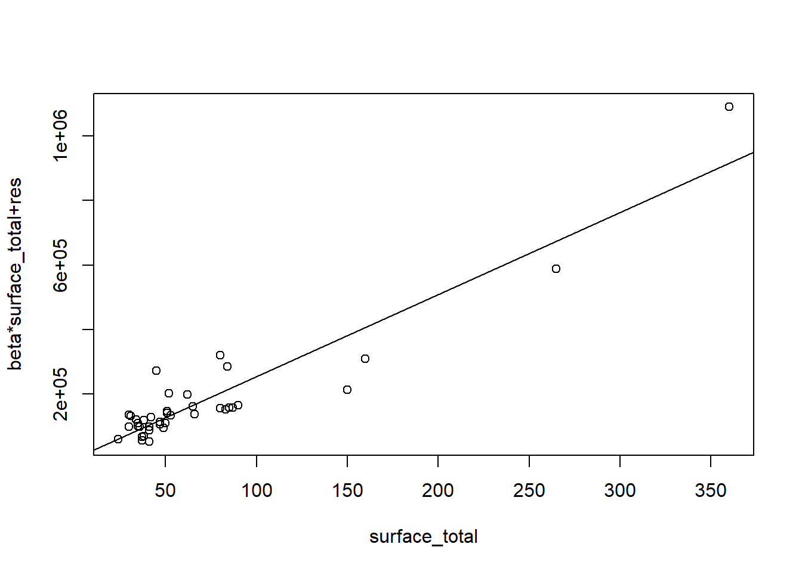

p +geom_smooth(method ="lm", se =TRUE)#para mostrar la banda de confianza
Entonces, se analiza el el modelo propuesto y como el p-valor dado es menor al valor de significancia, entonces la pendiente es significativamente distinta a cero y por ende el modelo lineal propuesto es válido.
Código
summary(modelo1)
Call:
lm(formula = price ~ surface_total, data = casas)
Residuals:
Min 1Q Median 3Q Max
-184995 -30717 1140 26254 176445
Coefficients:
Estimate Std. Error t value Pr(>|t|)
(Intercept) -8261.4 15892.7 -0.52 0.606
surface_total 2588.4 167.1 15.49 <2e-16 ***
---
Signif. codes: 0 '***' 0.001 '**' 0.01 '*' 0.05 '.' 0.1 ' ' 1
Residual standard error: 67130 on 37 degrees of freedom
Multiple R-squared: 0.8664, Adjusted R-squared: 0.8628
F-statistic: 239.9 on 1 and 37 DF, p-value: < 2.2e-16
Por el valor obtenido de \(\ R^2= 0.86\) se deduce que el modelo propuesto explica el 86,63% de la variabilidad de los datos.
Código
#coeficiente de determinación (en summary)summary(modelo1)$r.squared
a <-ggplot(casas, aes(surface_total, antiguedad))a +geom_point()

Código
shapiro.test(resid(modelo2))
Shapiro-Wilk normality test
data: resid(modelo2)
W = 0.95977, p-value = 0.1752
Vemos los resultados del modelo
Código
summary(modelo2)
Call:
lm(formula = price ~ surface_total + antiguedad, data = casas)
Residuals:
Min 1Q Median 3Q Max
-169237 -34374 -4475 23292 173232
Coefficients:
Estimate Std. Error t value Pr(>|t|)
(Intercept) 12236.6 25609.5 0.478 0.636
surface_total 2545.5 172.2 14.781 <2e-16 ***
antiguedad -1864.5 1827.2 -1.020 0.314
---
Signif. codes: 0 '***' 0.001 '**' 0.01 '*' 0.05 '.' 0.1 ' ' 1
Residual standard error: 67090 on 36 degrees of freedom
Multiple R-squared: 0.8701, Adjusted R-squared: 0.8629
F-statistic: 120.6 on 2 and 36 DF, p-value: < 2.2e-16
Código
library(faraway)prplot(modelo2,1)

Código
p +geom_smooth(method ="lm", se =FALSE)
Ejecutar el código
---title: "Regresión Lineal y Múltiple"author: "Pamela E. Pairo"lang: esformat: html: theme: flatly code-fold: show code-tools: true toc: true toc-location: left---```{r setup, include=FALSE}knitr::opts_chunk$set(echo =TRUE)knitr::opts_chunk$set(message =FALSE)knitr::opts_chunk$set(warning =FALSE)library(tidyverse)library("readxl")library(MASS)library(car)```Se dispone de un dataset con datos del precio de viviendas de CABA y información respecto a la antiguedad y la superficie.```{r}casas <-read_excel("casas.xlsx")summary(casas)```Se realiza un grafico de dispersión.```{r}p<-ggplot(casas, aes(x =surface_total , y = price)) +geom_point(aes(), colour ="deepskyblue", size=2)p +xlab("Superficie") +ylab("Precio") ```## Regresión Lineal SimpleSe plantea el modelo de Regresión```{r}modelo1<-lm(price ~ surface_total, data=casas)summary(modelo1)```Se calculan los residuos del modelo para chequear los supuestos.```{r}#Calculamos los residuos y los predichose<-resid(modelo1) # residuosre<-rstandard(modelo1) #residuos estandarizadospre<-predict(modelo1) #predichosres<-cbind(casas$surface_total,casas$price,pre,e,round(re,2))colnames(res)<-c("superficie", "precio", "Predichos", "Residuos", "residuos std") head(res)```Evaluamos el supuesto de normalidad de manera gráfica y mediante una prueba de hipótesis.```{r}#SupuestosqqPlot(e)``````{r}shapiro.test(e)```Como el p-valor= 0.284 es menor a $\alpha$ (0.05), se asume normalidad en los datos.**Intervalo de Confianza**Se calcula el intervalo de confianza del 95% para la ordenada al origen y la pendiente del modelo de regresión. Para cambiar el nivel de confianza cambiar el parámetro `level````{r}confint(modelo1)#por default es del 95%```Se agrega la recta al gráfico```{r}p +geom_smooth(method ="lm", se =TRUE)#para mostrar la banda de confianza```Entonces, se analiza el el modelo propuesto y como el p-valor dado es menor al valor de significancia, entonces la pendiente es significativamente distinta a cero y por ende el modelo lineal propuesto es válido.```{r}summary(modelo1)```Por el valor obtenido de $\ R^2= 0.86$ se deduce que el modelo propuesto explica el 86,63% de la variabilidad de los datos.```{r}#coeficiente de determinación (en summary)summary(modelo1)$r.squared```## Regresión Lineal Múltiple```{r}modelo2<-lm(price ~ surface_total + antiguedad, data=casas)``````{r}a <-ggplot(casas, aes(surface_total, antiguedad))a +geom_point()``````{r}shapiro.test(resid(modelo2))```Vemos los resultados del modelo```{r}summary(modelo2)``````{r}library(faraway)prplot(modelo2,1)``````{r}p +geom_smooth(method ="lm", se =FALSE)```